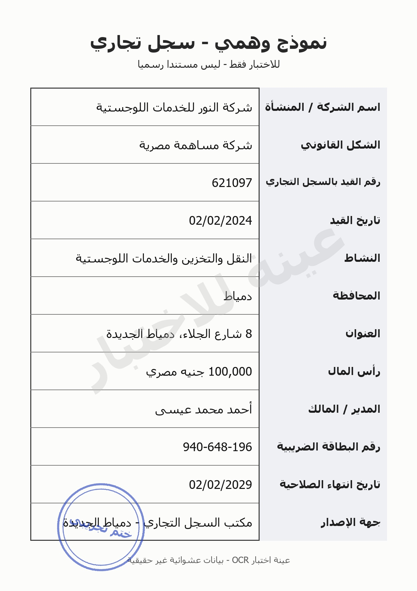
Syd Joew - Ww0dg T5905 621097 02/02/2024 iwogl Slossdla Uylg Jail bles Say) blood «eVell ela 8 (Sao 4ic 100,000 940-648-196 02/02/2029 dlaniod! / 4S nu! pus! gia] JS! Sy Gi Joawl will 3, blu! Ulgisdl JloJI Gui, boll / ys roul A> Mol eles! Gu sluoVl Ap>:
سجل تجاري نموذج وهمي دسميا ليس للاختبار فقط للخدمات اللوجستية شركة اسم الشركة / المنشأة شركة مساهمة مصرية الشكل القانوني 621097 رقم القيد بالسجل التجاري 02/02/2024 تاريخ القيد النقل والتخزين والخدمات اللوجستية النشاط دمياط المحافظة الجلاء دمياط الجديدة 8 العنوان 100,000 جنيه مصري دأس المال عيسى محمد المالك المدير 940-648-196 رقم البطاقة الضريبية 02/02/2029 تاريخ انتهاء الصلاحية دمياطالجديدة مكتب السجل التجاري الإصدار خت حقيقيا بيانات عشوائية OCR عينة اختبار مستندا النور 56 شارع أحمد جهة غير
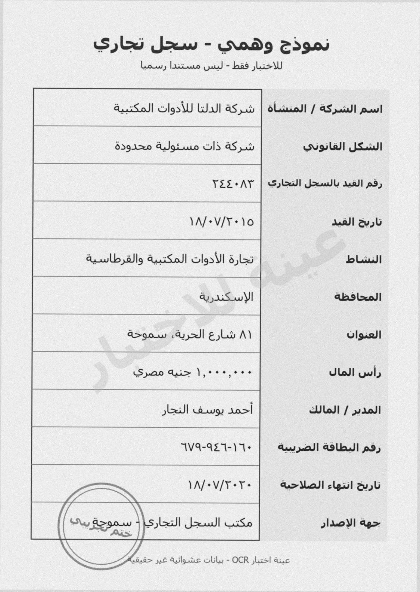
Syed Jew - Sods F590) Au3So)] lg Wl aS Y22*AY \N/+V/¥+\o Arwlb Ilo GiSodl GlgsVI 8 La iS wl BS gow «yoJl EL A) W9-951-) 1+ VA/*V/¥+¥+ dled! / 4S nd! pul vgs] JS Soba! Joab wall pd, bla! UlgisJl Jl! Wi, Ube! / p20 > dol cles! Gul sluoyl de>. a> pre Ailoirce Olly - OCR jLasl auc
سجل تجاري نموذج وهمي مستندا رسميا للاختبار فقط المكتبية شركة الدلتا اسم الشركة / المنشأة شركة ذات مسئولية محدودة الشكل القانوني ٢٤٤٠٨٣ رقم القيد بالسجل التجاري ١٨/٠٧١٢٠١٥ تاريخ القيد المكتبية والقرطاسية تجارة النشاط الإسكندرية المحافظة الحرية سموحة ٨١ العنوان ا جنيه مصري المال دأس النجار أحمد / المالك ٩٤٦٠١٦٠-٦٧٩ رقم البطاقة الضريبية ١٨/٠٧/٢٠٢٠ تاريخ انتهاء الصلاحية سموحة مكتب السجل التجاري جهة الإصدار ختد حفتفد بيانات عشوائية OCR عينة اختبار ليس للأدوات الأدوات شارع المديد يوسف يباي غيد
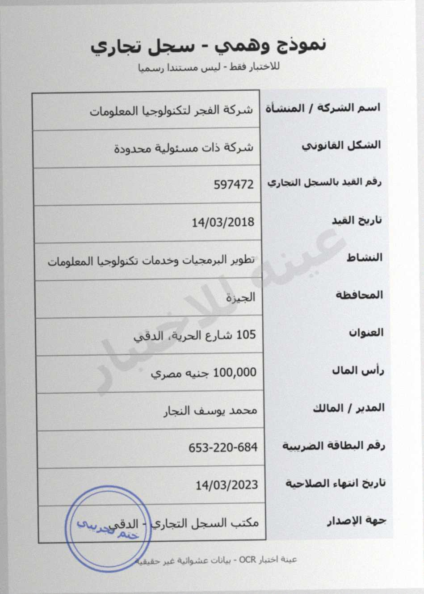
Syd Joew - Swds T5390) Lowy laine ya - bas Lis Slogleod! LogloiSd pall AS ab | Olasrol / AS nisl! pawl Sd9ix0 AJginuo lS aS. vigil! JS! 597472 | Sobel Jel wall pd, 14/03/2018 aaall Qusb Sloglaotl LoglyiSs olorss Claro! yobs bla! Eyres @bslxoll Sl ayo! Le 105 Ulgisl ‘Spas %i> 100,000 boll uwl, glexiJ] aig) Lomo Whol / r0Jl 653-220-684 Gawd! A9UEsJ! 9, G> Sod! clgul Quyb sluoyl ag> i> pat Apilganc OL: - OCR ,lus! anc
سجل تجاري نموذج وهمي مسىندا رسمىا للاحىبار ففط لتكنولوجيا المعلومات شركة المنساة السركة شركة ذات مسئولية محدودة السكل العانونى 597472 رقم المىد بالسحل التحارى 14/03/2018 نارىح تطوير البرمجيات وخدمات تكنولوجيا المعلومات النساط الجيزة المحافطة الحرية . 105 العنوان جنبه مصري 100,000 دأس المال محمد يوسف النجار المال المدير 653-220-684 رقم البطاقه الضربه 14/03/2023 تارىخ اسهاء الصلاحية الدقيجريبى مكتب السجل التجاري جهه الإصدار 0> تممد تمانات عسوائية OCR عبته اختبار لىس اسم الفجر المبد شارع الدقي عمر
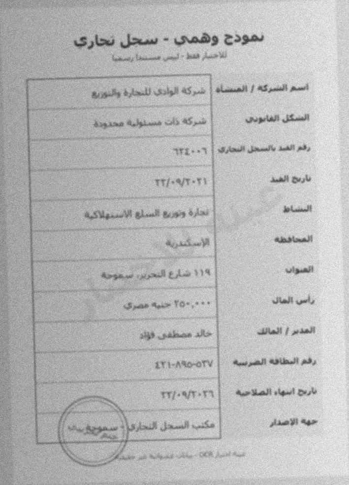
سحل بتارت بمودح وهمى الرا تدن صركه الادد لللتذو اسم الركه 1 اأتغحذ حراه إلإوا- المسكل لمارين ٦ ٦١٦٠٠ ره بمد السومل اللعاره 11/01+51 باربج أنعد مدآره وذمت المملى الإرهاافه الساف التلدا مد! 10 ماس البان ٧؟ ئه اللمالا 11 15 07 دامام الدرده ٢7٠٥٠!1 نارمع امهاء الصلاعية مذب الرممئل لسدارد مراه بذممدار ١١٦ »٤ ابر ر المدم
Syd Joew - Ww0dg T5905 Ab] clojliauol Gopi! AS cb | Olaaiodl / AS puisl] pow! yolai aS jiu Wigiladl JSuw! 182975 | Syl Jr will po, 10/10/2021 wl Gb Aub)] wlojslinnodl 5 ybe3 bal S519] cdj9] Eyl 97 Ulgisdl (Spa i> 100,000 JLo] Goi, 174-220-624 Gy OJ] 49! p35 10/10/2026 > Moll ele! GU sluoVl Ap>:
سجل تجاري نموذج وهمي دسميا ليس للاختبار فقط شركة الشروق للمستلزمات الطبية اسم الشركة / المنشأة شركة تضامن الشكل القانوني 182975 رقم القيد بالسجل التجاري 10/10/2021 تاريخ القيد تجارة المستلزمات الطبية النشاط قية المحافظة الثورة, الزقازيق 97 العنوان 1 100,000 جنيه مصري دأس المال السيد حسن المالك المدير 174-220-624 رقم البطاقة الضريبية 10/10/2026 تاريخ انتهاء الصلاحية الزقازيقريبي مكتب السجل التجاري الإصدار ختم حقيقيا بيانات عشوائية OCR عينة اختبار مستندا 99 الشر شارع علي جهة غير
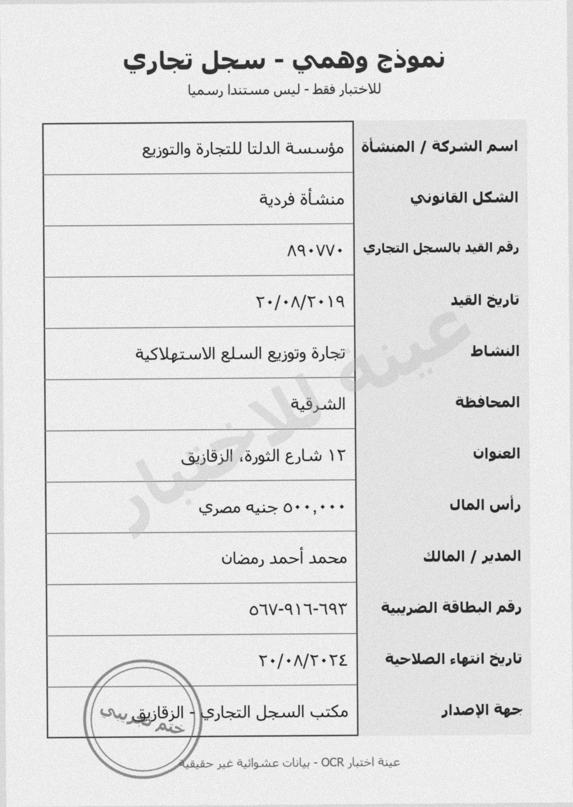
Syd Joew - Wwds T5905 gujgulla djl Wal Auiugo | oliasoll / AS, pawl &>,9 dLiio Ngilall JS AQsVVe | Sobel Joel atl! 29, Yo/*A/T*\9 ws] Qub 4SWpiwl glu! g939 d,b3 bli! Gy JI dQ] E,Le VY vloisdl Span Wir Ore, 9¢ Jbl wi, ula, fies Joo Wed / rod! OAVEVVAAAY, Guu oJ] 49! p35 G> dod! slew! Gul sluoyl ago A> ye Aloe OL, - OCR Las! auc
سجل تجاري نموذج وهمي مستندا دسميا للاختبار فقط مؤسسة الدلتا للتجارة والتوزيع اسم الشركة / المنشأة منشأة فردية الشكل القانوني ٨٩٠٧٧٠ بالسجل التجاري دقم ٢٠١٠٨/٢٠١٩ تاريخ القيد تجارة وتوزيع السلع الاستهلاكية النشاط قية المحافظة الثورة. الزقازيق ١٢ العنوان مصري ٥٠ جنبه المال دأس محمد أحمد رمضان المدير / المالك ٦٠٦٩٣ ٩١-٥٦٧ رقم البطاقة الضريبية ٢٠١٠٨/٢٠٢٤ تاريخ انتهاء الصلاحية الزقازيقريبي مكتب السجل التجاري الإصدار ختم بيانات عشوانية غير حقيقيا OCR عينة اختبار ليس القيل الشر شارع جهة
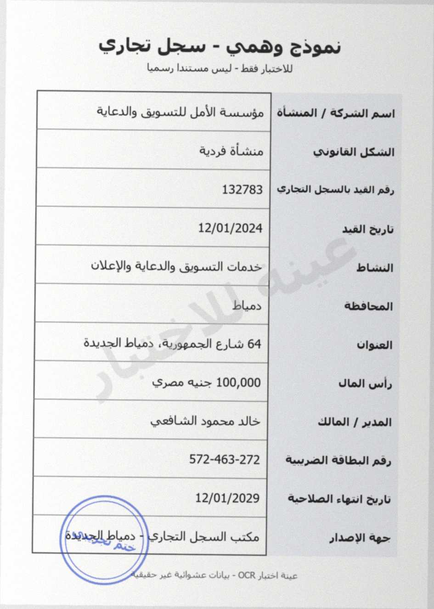
Sob5 Joew - ods A590) Lowy laicone Quid - bead jlasW dlaaioll / AS nil! pul a>, dle Wg! JS! 132783 | Sob Jal sal pS, 12/01/2024 al Qu, i anu Giga] Gloss bla! a \. 4b3lxoll sues Las usgpocl ieee Vigil 4 sen ain Ub ual, Boe MII / yacdl yasdLiul spore US 572-463-272 aw wo! ASU! p95 12/01/2029 > dal clgul Gb lao! ago. A> pt Adlgaic CLL, - OCR jLasl anc
سجل تجاري نموذج وهمي لىس مستندا للاختبار فقط للتسويق والدعاية مؤسسة اسم السركه / المىساه منشأة فردية السكل القانونى 132783 رفم المىد بالسحل التجارى 12/01/2024 تارىخ القيد خدمات التسويق والدعاية والإعلان النساط دمياط المحافط دمناط الجديدة 64 شارع الجمهورية العىوان 100,000 جنيه مصري داس المال خالد محمود الشافعي المالك المدىر 572-463-272 رقم البطاقة 12/01/2029 تارىخ التهاء الصلاحيه دمياط الجديد مكتب السجل التجاري جهه الإصدار خند حمنف بمانات عشوانيه OCR عيته اختبار رسمنا الأمل الصد سه عمر
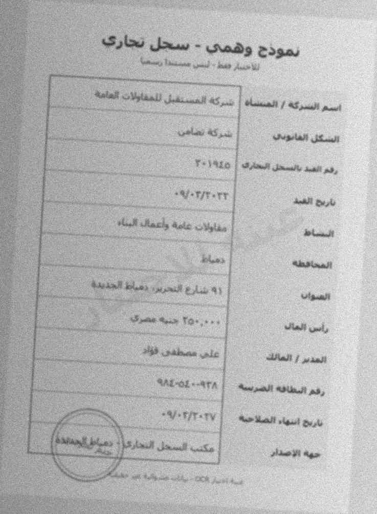
سحل تحارى بمودع وهمى دمركه المستهذ لاععارات قجامة اسم لسركه / الصعماء ترله عمام الصع الماايد ر دسد بالمل ٠٢7٠٢٢ ؟؛ نارج الم معاواب مامة واقدل المماء اسساة الأداد أا شن لعرره ذماا اجذا8 آلشواب 35> ذوآ با تيال مدت دد المر! ألمالا 1مدئ [ روم نمساده القرم 1/571+74 ناربه اسماء المدحة المدارن عمه ادمتدار ٢٠١٦l٥ عثلا ٠٠٩٢٨
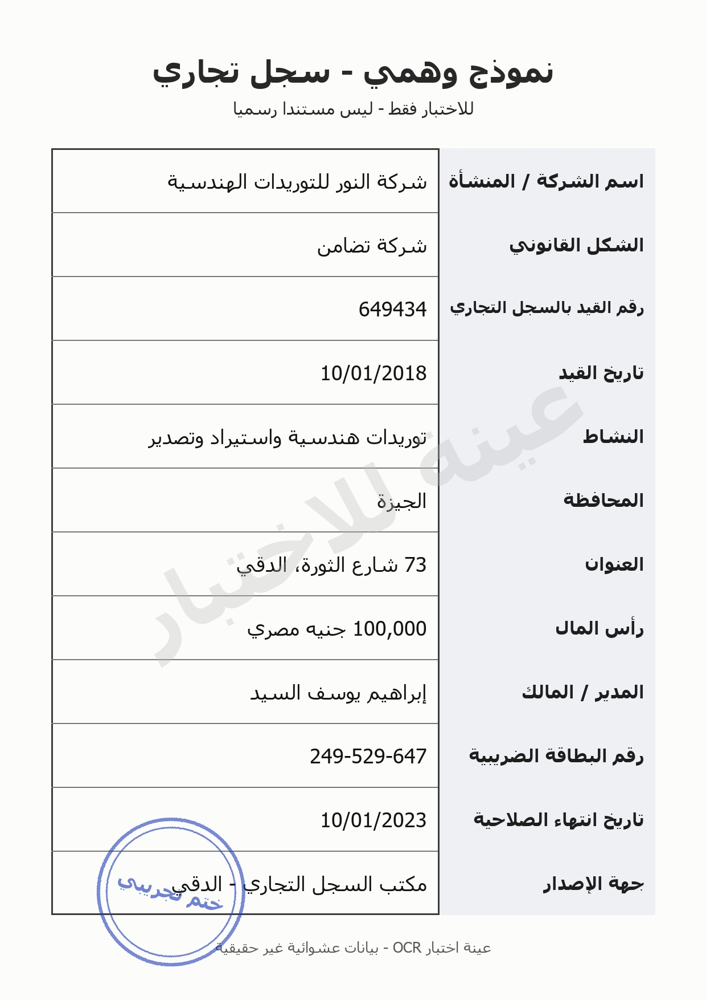
Syd Joew - Ww0dg T5905 Aapwiigs] lay joJl AS | dlaniodl / AS .wI pul yolai aS jiu Wigiladl JSuw! 649434 | Srleul Jol wall 23, 10/01/2018 wl Gb pLai9 Syeiwlg QI ly 595 bul sd] 8,93) Egle 73 Ulgisll (Spa i> 100,000 JLo] Goi, 249-529-647 Gy OJ] 49! p35 > Mod! sles! G6 sluoVl Ap>:
سجل تجاري نموذج وهمي دسميا ليس للاختبار فقط للتوريدات الهندسية شركة اسم الشركة / المنشأة شركة تضامن الشكل القانوني 649434 رقم القيد بالسجل التجاري 10/01/2018 تاريخ القيد توريدات هندسية واستيراد وتصدير النشاط الجيزة المحافظة الثورة . 73 العنوان 100,000 جنيه مصري دأس المال إبراهيه يوسف السيد المالك المدير 249-529-647 رقم البطاقة الضريبية 10/01/2023 تاريخ انتهاء الصلاحية الدقيجريبي مكتب السجل التجاري الإصدار ختم حقيقية بيانات عشوائية OCR عينة اختبار مستندا النور 56 شارع الاقط ) جهة غير
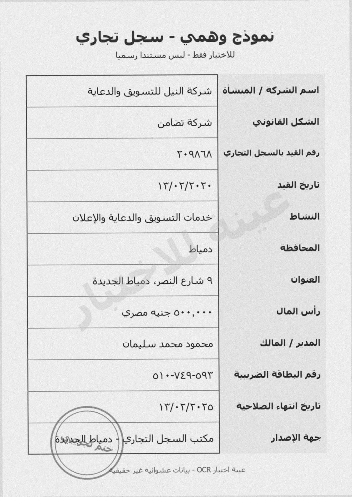
Syd Joew - 0g [59.05 Alowla Sou Jail aS pb T*QA1A V¥/+¥/Y*¥+ VUCVg Ylelo Gow] wlosr> blos byte] bles «pal EL 9 Span Gir Ore, 0°" 0) +-V£9-08Y \¥/+T/T+Yo dliaiol! / AS dl paul vga] JS! Syl! Foul wall 99, bli! Ulgisll Jol ui, MboJI / p01 > Vall slyiil Gu sluoyl ago
سجل تجاري نموذج وهمي مستندا رسميا للاختبار فقط شركة النيل للتسويق والدعاية اسم الشركة / المنشأة شركة تضامن الشكل القانوني ٢٠٩٨٦٨ رقم القيد بالسجل التجاري ١٣١٠٢٢٠٢٠ تاريخ القيد خدمات التسويق والدعاية والإعلان النشاط دمياط المحافظة دمياط الجديدة ٩ العنوان ٥ جنيه مصري المال دأس محمود محمد سليمان / المالك ٥٩٣-٥١٠٠٧٤٩ رقم البطاقة الضريبية ١٣١٠٢/٢٠٢٥ تاريخ انتهاء الصلاحية ٥ دمياط الجديد مكتب السجل التجاري جهة الإصدار دتد حقثقا بيانات عشوانية OCR عينة اختبار ليس النصر شارع المديد غير
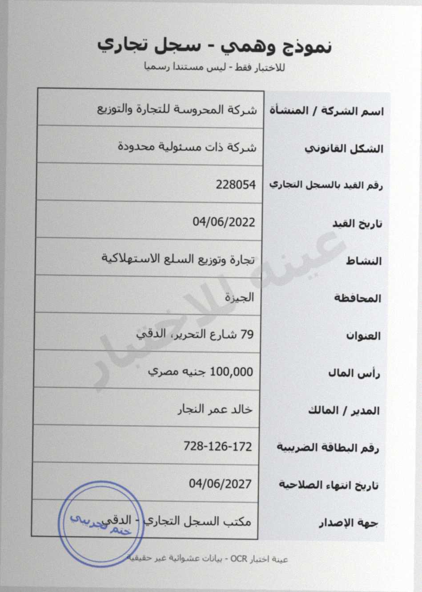
Bigilly ja Aug roll aS is Od91>0 Adgiwuo GIs AS, .b 228054 04/06/2022 US pi wl glu! gigi9 djl Ojacl 8. Gysul e,La 79 ‘Sao a> 100,000 glewJI poe Je 728-126-172 Sys Joew - Wwods e590) Lees Laiiene puted - baad Ls Olamioll / 4S ui! pawl Veilal USI SrbuI! Jew ral 28, al Qu bli! 4bSlxoJ! lois! JboJl uwi, Uhl / wrod! Fa od] ASU pS, Sura! cles! Quy gluoyl ag> Brb> yt Alp c Obl, - OCR lis! auc
سجل تجاري نموذج وهمي ليس مستىدا رسميا للاحتبار ففط شركة المحروسة للتجارة والتوزيع اسم السدكة / المنسأه شركة ذات مسئولية محدودة السكل القانونى 228054 دفم الصىد بالسحل التحارى 04/06/2022 تارىخ الفيد تجارة وتوزبع السلع الاستهلاكية النساط الجيزة المحافطة الد 79 شارع العىوان جنيه مصري 100,000 راس المال خالد عمر النجار المالك المدىر 728-126-172 رفم البطاقة الضريسه 04/06/2027 تاريخ التهاء الصلاحيه الدقيجريبى مكتب السجل التجاري الاصدار حت حفمفم بمانات عواننه OCR عينة احتبار قي التحربر حهه عبد
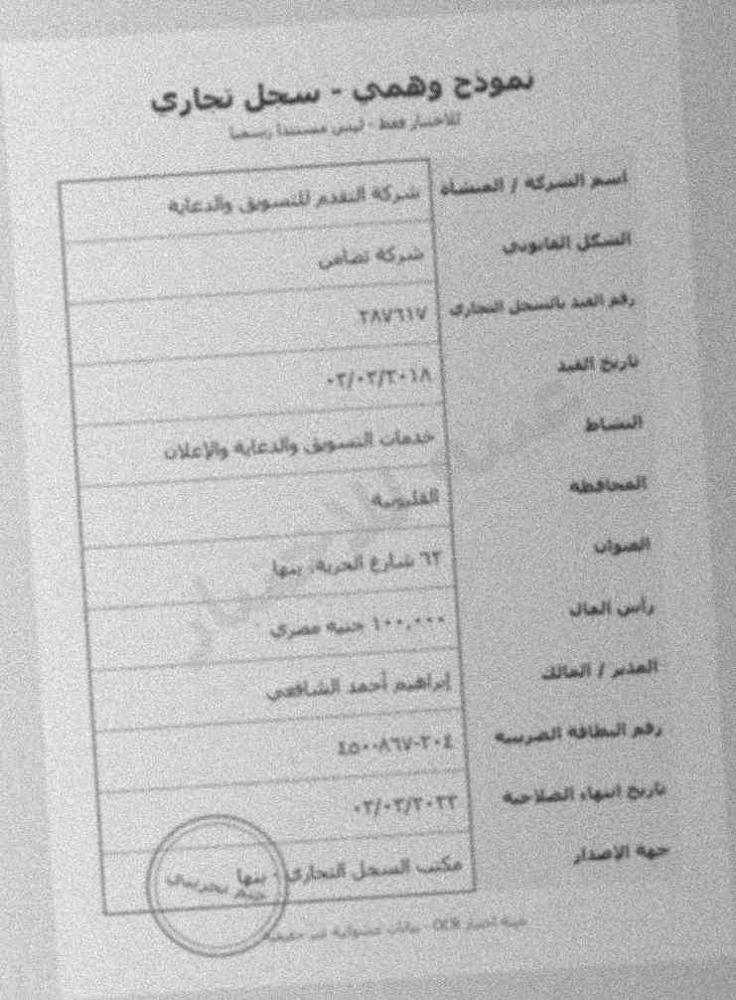
سعل بجارى بشودع وقمى ابدبا السريه ] امممء مرآد بقد ءآه السكل شركه ساصر لعارف الن ٢٨٦١٦ ؛١ ٠٣7٢٠!٠٢ آخ_ ولدعره وائا علادا تاذمان لعد الوررد ٦٢ را المال نذمرد المالل الحذرر الرافت ادمء ودم المخطاعه المرسه 0٠١ ٥٠٠٨٦٧٠٢ ٢ا٠ الما سه ٠٣ ٠٢٧٠٢١٦ حعء الاصداء الدول قمدارن ا ٧ المااودن ماسمل نارج السدد إ سر تمدن مشام مارة مامما